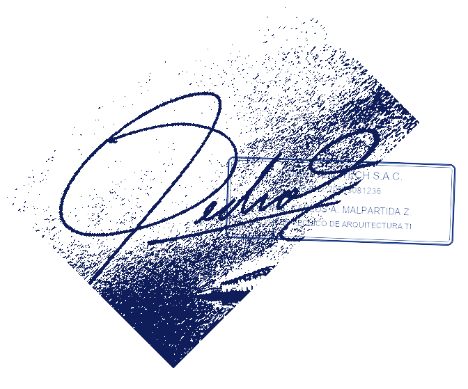
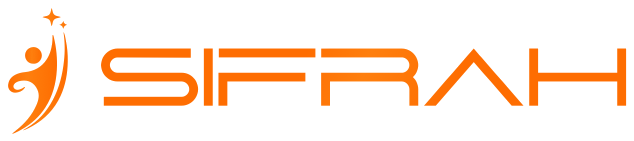
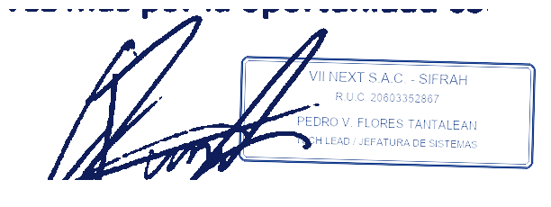
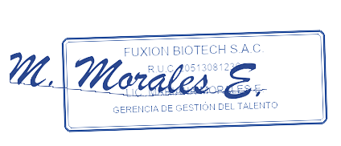
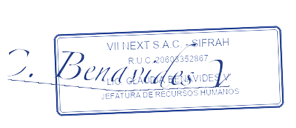

Por medio de la presente, me dirijo a ustedes para hacer constar que conozco y he supervisado el desempeño profesional de JORDY JOSEPH MONTALVO ALFARO, identificado con D.N.I. N° 90162185, quien prestó servicios profesionales en FUXION BIOTECH S.A.C. (R.U.C. N° 20513081236) desde enero de 2025 hasta agosto de 2026, desempeñando el rol de Desarrollador Full Stack Senior dentro del equipo de Arquitectura y Tecnologías de la Información (TI).
Durante el período de su contratación, demostró solvencia técnica, alto compromiso y capacidad de liderazgo en el análisis, relevamiento de requerimientos y diseño de arquitectura para microservicios empresariales desarrollados en Java 11+ y Spring Boot, desplegados sobre clústeres de Kubernetes en entornos de nube como GCP y AWS. Asimismo, implementó capas de mensajería asíncrona desacopladas con Apache Kafka y Google Pub/Sub para transacciones de alto volumen, desarrolló aplicaciones web modulares y reactivas en Angular con TypeScript y RxJS, y optimizó procedimientos almacenados en bases de datos Oracle PL/SQL y SQL Server, reduciendo la latencia de consultas en un 38%.
A nivel profesional y personal, demostró puntualidad en las entregas bajo el marco de trabajo Scrum, excelente trabajo en equipo, capacidad analítica para resolver problemas complejos y una conducta ética intachable.
Por las razones expuestas, no dudo en recomendarlo ampliamente para cualquier posición o proyecto de ingeniería de software que asuma en su organización.
Quedo a su entera disposición para cualquier consulta o información adicional que requieran.
Atentamente,


Por medio de la presente, hago constar que conozco el desempeño profesional de JORDY JOSEPH MONTALVO ALFARO, identificado con D.N.I. N° 72481940, quien prestó servicios profesionales para SIFRAH (VII NEXT S.A.C., R.U.C. N° 20603352867) en el período comprendido entre enero de 2023 y enero de 2025, desempeñando el rol de Analista Programador Full Stack en el área de Tecnología de la Información y Desarrollo de Sistemas.
A lo largo de su servicio, estuvo a cargo de la construcción y soporte de servicios backend transaccionales en Java (Spring Boot) y .NET (C#), integrando pasarelas de pago, facturación electrónica y servicios On-Premise. Asimismo, implementó colas de mensajería asíncrona con RabbitMQ para la orquestación entre sistemas satélites y sincronización con almacenes NoSQL (MongoDB), y desarrolló interfaces web dinámicas con Angular, TypeScript, HTML5 y CSS3, optimizando los tiempos de carga y métricas de rendimiento en un 40%.
Durante todo su tiempo con nosotros, demostró gran iniciativa, responsabilidad, resolución técnica de incidencias y un claro enfoque en la calidad de software y mejores prácticas colaborativas bajo Git.
Por lo expuesto, extiendo mi recomendación profesional y personal hacia su persona, con la certeza de que aportará alto valor técnico y humano en los nuevos retos laborales que emprenda.
Quedo a su entera disposición para atender cualquier requerimiento de validación complementaria.
Atentamente,

La que suscribe, en representación de FUXION BIOTECH S.A.C., entidad jurídica identificada con R.U.C. N° 20513081236, con domicilio legal en Av. El Derby N° 250, Int. 1401, distrito de Santiago de Surco, provincia y departamento de Lima:
CERTIFICA:
Que, el señor JORDY JOSEPH MONTALVO ALFARO, identificado con D.N.I. N° 90162185, laboró en nuestra institución bajo contrato de trabajo a plazo determinado sujeto a modalidad (al amparo del Texto Único Ordenado del Decreto Legislativo N° 728, Ley de Productividad y Competitividad Laboral), durante el período comprendido desde el 06 de enero de 2025 hasta el 14 de agosto de 2026.
Durante su permanencia en la empresa, desempeñó de manera destacada, a jornada completa y con alto rigor profesional el cargo de:
Dejamos constancia de que durante el tiempo que prestó sus servicios, el señor Montalvo demostró notable idoneidad técnica, capacidad resolutiva, responsabilidad y una conducta ética intachable, cumpliendo cabalmente con las asignaciones y objetivos corporativos encomendados.
Se expide el presente certificado a solicitud del interesado para los fines laborales y profesionales que estime pertinentes.

Por medio del presente documento, FUXION BIOTECH S.A.C. (R.U.C. N° 20513081236), con sede corporativa en Av. El Derby N° 250, Int. 1401, distrito de Santiago de Surco, Lima, certifica la prestación de servicios profesionales autónomos conforme a la siguiente ficha técnica:
| Profesional Titular: | JORDY JOSEPH MONTALVO ALFARO (D.N.I. N° 90162185) |
| Cargo / Rol Asignado: | DESARROLLADOR FULL STACK SENIOR |
| Área de Asignación: | Arquitectura de Software y Tecnologías de la Información (TI) |
| Período de Prestación: | Desde enero de 2025 hasta agosto de 2026 (19 meses) |
| Alcance del Servicio: | Diseño e implementación de microservicios Spring Boot, colas asíncronas Kafka, arquitectura cloud en GCP/AWS y frontends modulares e-commerce. |
Hacemos constar que los entregables técnicos, hitos de consultoría y acuerdos de nivel de servicio fueron cumplidos a entera satisfacción de nuestra gerencia de tecnología, evidenciando alto estándar de ingeniería, proactividad y conducta ética intachable.
Se otorga la presente constancia a solicitud del interesado para los fines profesionales y laborales que estime convenientes.
La empresa VII NEXT S.A.C. (SIFRAH), identificada con R.U.C. N° 20603352867, con domicilio fiscal en Mza. P1 Lote 3 A.H. La Rinconada de Pamplona Alta, distrito de San Juan de Miraflores, Lima:
CERTIFICA:
Que, el señor JORDY JOSEPH MONTALVO ALFARO, identificado con D.N.I. N° 72481940, laboró en nuestra empresa bajo el régimen laboral de la actividad privada (Decreto Legislativo N° 728), durante el período comprendido desde el 09 de enero de 2023 hasta el 17 de enero de 2025.
Habiéndose desempeñado a tiempo completo y con alto nivel de desempeño en el puesto de:
Durante el tiempo en mención, demostró destacada capacidad técnica, compromiso, proactividad y un correcto espíritu colaborativo, observando una conducta intachable en todas las labores asignadas.
Se expide el presente certificado a solicitud del interesado para los fines que estime pertinentes.

LA JEFA DE RECURSOS HUMANOS Y ADMINISTRACIÓN DE VII NEXT S.A.C. QUE SUSCRIBE:
El señor JORDY JOSEPH MONTALVO ALFARO, identificado con D.N.I. N° 72481940, prestó servicios profesionales independientes bajo la modalidad contractual de Locación de Servicios (al amparo del artículo 1764° y concordantes del Código Civil Peruano), en el período comprendido desde enero de 2023 hasta enero de 2025.
Habiendo desempeñado sus funciones técnicas y profesionales con alto rigor, dedicación y solvencia en el puesto de:
Se deja expresa constancia de que durante dicho período, el señor Montalvo demostró destacada solvencia técnica en el desarrollo de servicios backend, integración de pasarelas de pago y soporte a la plataforma e-commerce, observando siempre una conducta intachable y alta responsabilidad.
A solicitud del interesado y para los fines que estime conveniente, se expide la presente constancia.